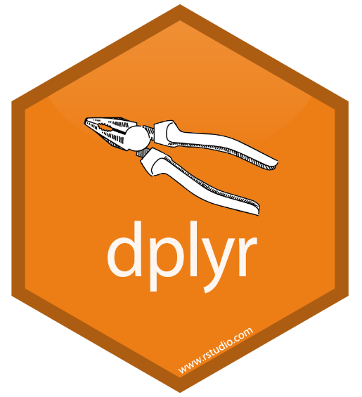
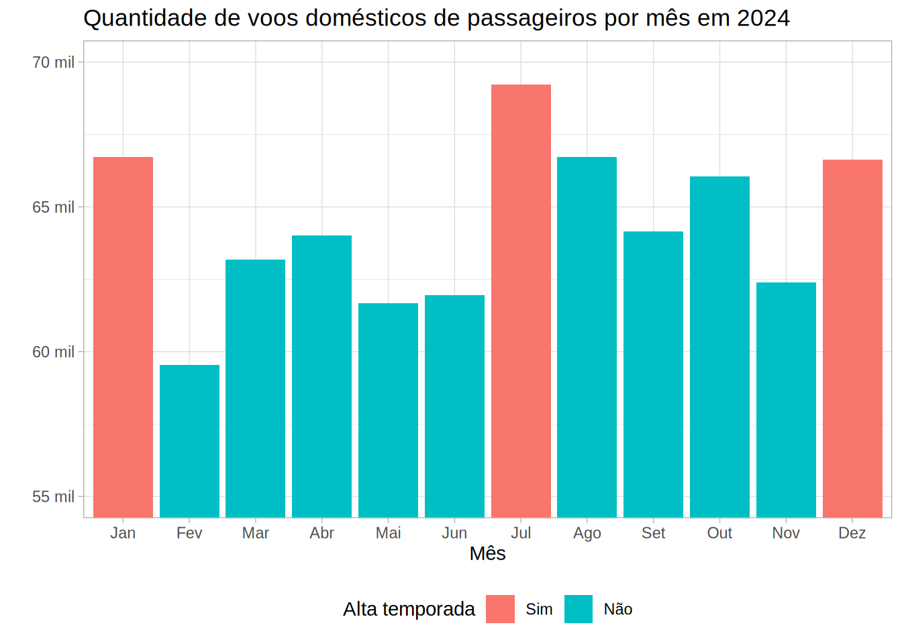

pacotes <- c("DBI", "RSQLite", "dbplyr", "arrow")
install.packages(pacotes)9 Introdução à Big Data
9.1 Introdução
Neste curso (e na maior parte do curso introdutório), focamos em trabalhar com conjuntos de dados pequenos e que cabem na memória RAM do computador. Isso permite que possamos carregar, manipular e analisar os dados diretamente no R sem grandes preocupações com limitações de hardware.
No entanto, muitas vezes, os dados são grandes demais para caber na memória do computador. Neste caso, é necessário usar técnicas diferentes para trabalhar com esses dados.
Big Data
O termo Big Data é usado para descrever conjuntos de dados que são tão grandes ou complexos que se tornam difíceis de processar com ferramentas tradicionais.
Big Data é geralmente definido em termos de “3 Vs”: volume, variedade, velocidade.
Nesta aula, vamos utilizar este termo para descrever conjuntos de dados que são grandes demais para caber na memória do computador.
““Big Data” is a relative term depending on who is discussing it. Big Data to Amazon or Google is very different than Big Data to a medium-sized insurance organization, but no less “Big” in the minds of those contending with it.” (A Brief History of Big Data, Keith D, 2017)
Caso não tenha os pacotes necessários instalados, você pode instalar executando o código abaixo:
9.2 Banco de dados SQL
Grande parte dos dados utilizados em pesquisas e análises estão armazenados em bancos de dados relacionais, que utilizam a linguagem SQL (Structured Query Language) para consulta e manipulação de dados.
O objetivo desta aula não é ensinar SQL, mas sim mostrar como podemos usar o R para se conectar a um banco de dados SQL e realizar consultas e manipulações de dados.
O fluxo de trabalho para trabalhar com dados armazenados em bancos de dados SQL no R é semelhante ao que já aprendemos com o uso de data.frames e tibbles, mas possui algumas diferenças, como:
Conectar com o banco de dados: em vez de carregar a base completa no R (como fazemos com arquivos
.csv), precisamos fazer uma conexão com o banco de dados.Pensar no problema que queremos resolver: antes de realizar qualquer consulta, é importante ter em mente o que queremos analisar e quais dados são necessários. Por exemplo: se queremos fazer uma análise dos dados da RAIS em um ano específico, e para um estado específico, não faz sentido carregar todos os dados da RAIS no R. Precisamos pensar em quais operações são necessárias.
Consulta: Fazer as operações necessárias no banco de dados para obter os dados desejados.
Coletar os dados: após realizar a consulta, precisamos trazer os dados para a memória da sessão do R, para realizar análises.
Desconectar do banco de dados: após finalizar as análises, é importante desconectar do banco de dados para não utilizar recursos desnecessários do servidor.
Continuar a análise: após coletar os dados, podemos continuar a análise como fizemos anteriormente.
9.2.1 Conexão com bancos de dados SQL
O pacote {DBI} (R Database Interface) é uma interface para se conectar a bancos de dados SQL. Ele fornece funções que permitem se conectar a diferentes bancos de dados SQL, permitindo que você use a mesma sintaxe.
Para se conectar a um banco de dados específico, você precisa instalar o pacote que fornece a conexão com o banco de dados, como:
PostgreSQL (com o pacote
{RPostgres})MySQL ou MariaDB (com o pacote
{RMariaDB})SQLite (com o pacote
{RSQLite})Google Big Query (com o pacote
{bigrquery})odbc (com o pacote
{odbc})
# install.packages("DBI")
library(DBI)O pacote DBI apresenta funções para se conectar a um banco de dados, como dbConnect() e dbDisconnect(). Na prática, essas funções são apenas interfaces, e são implementadas pelos pacotes específicos listados acima.
Vamos explorar a função dbConnect() para conectar a um banco de dados. Essa função recebe como argumento drv (o driver do banco de dados) e as informações necessárias para a conexão, como: o nome do banco de dados, o usuário, senha, entre outros.
Geralmente, acessamos bancos de dados SQL em um servidor, que requer credenciais de acesso, como usuário e senha.
O código abaixo mostra um exemplo de conexão com um banco de dados PostgreSQL:
con <- DBI::dbConnect(
drv = RPostgres::Postgres(),
host = "...",
user = "...",
port = 5432,
password = "..."
)No exemplo acima, estamos nos conectando a um banco de dados PostgreSQL, informando o host, usuário, porta e senha. As informações de conexão dependem do banco de dados que você está utilizando, e você deve consultá-las com o administrador do banco de dados.
Perceba que o código acima salva o resultado da conexão no objeto con. Utilizaremos esse objeto para realizar o acesso ao banco de dados.
Também é possível se conectar a um banco de dados SQLite, que é um banco de dados disponibilizado em um arquivo, e que não requer um servidor:
con <- dbConnect(drv = RSQLite::SQLite(),
# caminho para um arquivo SQLite
dbname = "dados/flights_br.sqlite")Conseguimos listar as tabelas disponíveis no banco de dados com a função dbListTables():
dbListTables(con)
# [1] "voos"Como dito anteriormente, ao finalizar a análise, é necessário desconectar do banco de dados com a função dbDisconnect():
dbDisconnect(con)
# <SQLiteConnection>
# DISCONNECTED9.2.2 Exercícios
Em breve!
9.3 Utilizando a sintaxe do dplyr

No curso anterior, aprendemos a usar o pacote {dplyr} para manipulação de dados. No entanto, exploramos apenas a utilização com o uso de data.frames e tibbles.
No entanto, o {dplyr} possui suporte para diferentes backends que permitem trabalhar com conjuntos de dados que não cabem na memória do computador. Isso significa que podemos usar a mesma sintaxe do {dplyr} para manipular dados armazenados em bancos de dados SQL, em arquivos Apache Arrow, entre outros. Na documentação, podemos encontrar uma lista de backends disponíveis: dplyr backends.
Vamos explorar dois pacotes que apresentam backends do dplyr: {dbplyr} (para trabalhar com dados armazenados em bancos de dados sql) e {arrow}.
Antes de explorar os pacotes, vamos conhecer duas funções importantes do {dplyr} que são utilizadas para trabalhar com bancos de dados SQL: tbl() e collect().
tbl(): cria um objeto que representa uma tabela no banco de dados. Esse objeto é uma referência à tabela, e não carrega os dados na memória.collect(): coleta os dados da tabela no banco de dados e carrega na memória.
Vamos ver um exemplo de como usar essas funções, a partir de um objeto que representa uma conexão com um banco de dados:
# Carragar o pacote dplyr
library(dplyr)db_dados_voos <- tbl(con, "voos")No exemplo acima, criamos um objeto db_dados_voos que representa a tabela voos no banco de dados. Perceba que os dados não foram carregados na memória.
Podemos verificar o tipo do objeto criado com a função class():
class(db_dados_voos)
# [1] "tbl_SQLiteConnection" "tbl_dbi"
# [3] "tbl_sql" "tbl_lazy"
# [5] "tbl" Algo muito importante é que, ao usar o tbl(), não conseguimos visualizar as colunas da tabela com a função names(), e precisamos usar a função colnames():
names(db_dados_voos)
# ! The `names()` method of <tbl_lazy> is for internal
# use only.
# ℹ Did you mean `colnames()`?
# [1] "src" "lazy_query"Utilizando a função colnames(), conseguimos visualizar as colunas da tabela:
colnames(db_dados_voos)
# [1] "id_basica"
# [2] "id_empresa"
# [3] "sg_empresa_icao"
# [4] "sg_empresa_iata"
# [5] "nm_empresa"
# [6] "nm_pais"
# .... Para coletar os dados na memória, utilizamos a função collect(). Porém o ideal é apenas coletar os dados necessários para a análise, e não a tabela inteira. Vamos explorar exemplos com a função collect() mais adiante.
9.3.1 Exercícios
Em breve!
9.4 dbplyr

O pacote {dbplyr} é um backend do {dplyr} que permite usar a sintaxe do {dplyr} para manipular dados armazenados em bancos de dados SQL, sem precisar carregar os dados inteiramente na memória.
O que o pacote dbplyr faz é traduzir as operações do {dplyr} em consultas SQL, que são executadas diretamente no banco de dados.
Vamos carregar o pacote:
library(dbplyr)Vamos utilizar o objeto db_dados_voos que criamos anteriormente para explorar o pacote dbplyr:
db_dados_voos <- tbl(con, "voos")As principais funções do dplyr são suportadas pelo dbplyr, como filter(), select(), mutate(), group_by(), summarise(), entre outras.
Imagine que queremos contar o número de voos considerando algumas variáveis, como o mês, ano, e características do voo:
query_voos_contagem_mes <- db_dados_voos |>
group_by(nr_ano_referencia, nr_mes_referencia,
ds_servico_tipo_linha, ds_natureza_etapa) |>
summarise(quantidade_de_voos = n(), .groups = "drop")query_voos_contagem_mesPerceba que a operação acima não coleta os dados na memória, mas sim traduz a operação em uma consulta SQL que é executada no banco de dados. A função show_query() permite visualizar a consulta SQL gerada:
show_query(query_voos_contagem_mes)
# <SQL>
# SELECT
# `nr_ano_referencia`,
# `nr_mes_referencia`,
# `ds_servico_tipo_linha`,
# `ds_natureza_etapa`,
# COUNT(*) AS `quantidade_de_voos`
# FROM `voos`
# GROUP BY
# `nr_ano_referencia`,
# `nr_mes_referencia`,
# `ds_servico_tipo_linha`,
# `ds_natureza_etapa`Algo muito legal de perceber é como muitas funções do {dplyr} tem nomes muito parecidos com as funções e comandos do SQL. O autor do pacote dplyr, Hadley Wickham, já utilizava SQL antes de criar o pacote {dplyr}!
Para coletar os dados na memória, utilizamos a função collect(). Ao utilizar essa função, o dbplyr traduz o código em {dplyr} para uma consulta de banco de dados, que é executada, e então e os dados são coletados na memória.
df_voos_contagem_mes <- collect(query_voos_contagem_mes)
df_voos_contagem_mes
# # A tibble: 60 × 5
# nr_ano_referencia nr_mes_referencia ds_servico_tipo_linha ds_natureza_etapa quantidade_de_voos
# <dbl> <dbl> <chr> <chr> <int>
# 1 2024 1 CARGUEIRO DOMÉSTICA 1916
# 2 2024 1 CARGUEIRO INTERNACIONAL 201
# 3 2024 1 NÃO IDENTIFICADO INTERNACIONAL 9459
# 4 2024 1 PASSAGEIRO DOMÉSTICA 66719
# 5 2024 1 PASSAGEIRO INTERNACIONAL 3901
# 6 2024 2 CARGUEIRO DOMÉSTICA 1787
# 7 2024 2 CARGUEIRO INTERNACIONAL 195
# 8 2024 2 NÃO IDENTIFICADO INTERNACIONAL 8867
# 9 2024 2 PASSAGEIRO DOMÉSTICA 59537
# 10 2024 2 PASSAGEIRO INTERNACIONAL 3201
# # ℹ 50 more rows
# # ℹ Use `print(n = ...)` to see more rowsObserve também que o objeto df_voos_contagem_mes é um tibble:
class(df_voos_contagem_mes)
# [1] "tbl_df" "tbl" "data.frame"Com os dados coletados na memória, podemos continuar a análise como estamos habituados.
Vamos visualizar a quantidade de voos domésticos de passageiros por mês em 2024. Para isso vamos preparar os dados, e então utilizar o pacote {ggplot2} para criar um gráfico de barras.
df_voos_contagem_mes_prep <- df_voos_contagem_mes |>
filter(ds_natureza_etapa == "DOMÉSTICA") |>
filter(ds_servico_tipo_linha == "PASSAGEIRO") |>
mutate(mil_voos = quantidade_de_voos / 1000,
nr_mes_referencia_fct = factor(nr_mes_referencia,
levels = 1:12,
labels = c("Jan", "Fev", "Mar", "Abr", "Mai", "Jun",
"Jul", "Ago", "Set", "Out", "Nov", "Dez")),
alta_temporada = ifelse(nr_mes_referencia %in% c(1, 7, 12), "Sim", "Não"),
alta_temporada = factor(alta_temporada, levels = c("Sim", "Não")))library(ggplot2)
df_voos_contagem_mes_prep |>
ggplot(aes(x = nr_mes_referencia_fct, y = mil_voos)) +
geom_col(aes(fill = alta_temporada)) +
labs(title = "Quantidade de voos domésticos de passageiros por mês em 2024",
x = "Mês",
y = "",
fill = "Alta temporada") +
coord_cartesian(ylim = c(55, 70)) +
scale_y_continuous(labels = ~ paste0(.x, " mil")) +
theme_light(base_family = "Arial") +
theme(legend.position = "bottom")
Nas aulas anteriores, utilizamos os dados de vôos para dezembro/2024. No resultado acima, é possível notar que temos dados de vôos de origem ou destino para o Brasil para todos os meses de 2024.
Essa base originalmente tem 944 mil linhas, para apenas um ano. Imagine se a gente precisasse trabalhar com toda a série histórica disponível! Dificilmente seria possível utilizando apenas a memória RAM do computador.
Lembre-se de desconectar do banco de dados após finalizar a análise:
dbDisconnect(con)
# <SQLiteConnection>
# DISCONNECTED9.4.1 Limitações
Nem todas as funções do dplyr são suportadas pelo dbplyr.
Um exemplo é a função tail(), que retorna as últimas linhas de uma tabela:
tail(db_dados_voos)
# Error in `tail()`:
# ! `tail()` is not supported on database
# backends.
# Backtrace:
# 1. utils::tail(db_dados_voos)
# 2. dbplyr:::tail.tbl_lazy(db_dados_voos)9.4.2 Exercícios
Em breve!
9.5 Arrow

O Arrow é um projeto da Apache Software Foundation, com o objetivo de criar um formato colunar universal, e que funcione em várias linguagens de programação.
O pacote {arrow} é a interface do R para o Arrow, e permite trabalhar com dados armazenados em arquivos no formato .parquet.
Este pacote também é permite usar a mesma sintaxe do {dplyr} para manipular dados armazenados em arquivos .parquet. Confira a lista de funções disponíveis com a interface do dplyr.
Nota
No curso introdutório, na aula sobre explorando o Censo demográfico, foi apresentado um exemplo de uso do pacote {arrow} para trabalhar com dados armazenados em arquivos no formato .parquet.
Após a leitura desta aula, você pode revisitar o exemplo e explorar outros exemplos com o pacote {arrow}.
Vamos carregar o pacote:
library(arrow)9.5.1 Importando dados no formato .parquet
O pacote tem duas funções importantes para a leitura e escrita: open_dataset() e write_dataset().
A função open_dataset() permite abrir um conjunto de dados armazenados em um diretório, e a função write_dataset() permite escrever um conjunto de dados em um diretório.
Vamos abrir um conjunto de dados de voos armazenados em arquivos .parquet. A função open_dataset() recebe como argumento o caminho para o diretório onde os arquivos estão armazenados, e o argumento format = "parquet":
diretorio_parquet <- "dados/flightsbr_parquet/"dados_voos_parquet <- open_dataset(
sources = diretorio_parquet,
format = "parquet"
)Mas o que temos no diretório dados/flightsbr_parquet/? Vamos listar os arquivos com a função fs::dir_tree():
fs::dir_tree(diretorio_parquet)
dados/flightsbr_parquet/
└── nr_ano_referencia=2024
├── nr_mes_referencia=1
│ └── part-0.parquet
├── nr_mes_referencia=10
│ └── part-0.parquet
├── nr_mes_referencia=11
│ └── part-0.parquet
├── nr_mes_referencia=12
│ └── part-0.parquet
├── nr_mes_referencia=2
│ └── part-0.parquet
├── nr_mes_referencia=3
│ └── part-0.parquet
├── nr_mes_referencia=4
│ └── part-0.parquet
├── nr_mes_referencia=5
│ └── part-0.parquet
├── nr_mes_referencia=6
│ └── part-0.parquet
├── nr_mes_referencia=7
│ └── part-0.parquet
├── nr_mes_referencia=8
│ └── part-0.parquet
└── nr_mes_referencia=9
└── part-0.parquetPodemos também listar os arquivos e o tamanho de cada arquivo com o código abaixo:
tab_tamanho_parquet <- tibble(
arquivos = list.files(diretorio_parquet, recursive = TRUE),
tamanho_MB = round(file.size(file.path(diretorio_parquet, arquivos)) / 1024^2, 2)
)tab_tamanho_parquet# A tibble: 12 × 2
arquivos tamanho_MB
<chr> <dbl>
1 nr_ano_referencia=2024/nr_mes_referencia=1/part-0.parquet 6.78
2 nr_ano_referencia=2024/nr_mes_referencia=10/part-0.parquet 6.3
3 nr_ano_referencia=2024/nr_mes_referencia=11/part-0.parquet 6.09
4 nr_ano_referencia=2024/nr_mes_referencia=12/part-0.parquet 6.56
5 nr_ano_referencia=2024/nr_mes_referencia=2/part-0.parquet 6.14
6 nr_ano_referencia=2024/nr_mes_referencia=3/part-0.parquet 6.41
7 nr_ano_referencia=2024/nr_mes_referencia=4/part-0.parquet 6.46
8 nr_ano_referencia=2024/nr_mes_referencia=5/part-0.parquet 6.24
9 nr_ano_referencia=2024/nr_mes_referencia=6/part-0.parquet 6.11
10 nr_ano_referencia=2024/nr_mes_referencia=7/part-0.parquet 6.54
11 nr_ano_referencia=2024/nr_mes_referencia=8/part-0.parquet 6.41
12 nr_ano_referencia=2024/nr_mes_referencia=9/part-0.parquet 6.13Perceba que o conjunto de dados está dividido em vários arquivos .parquet, e que o maior arquivo tem menos de 10 MB. No total, o conjunto de dados tem ~80 MB.
Para fins didáticos, exportei o mesmo conjunto de dados em .csv, e o arquivo tem ~800MB.
9.5.2 Utilizando o pacote arrow com o dplyr
Ao executar o objeto dados_voos_parquet, percebemos que é bem diferente de um data.frame ou tibble, pois ele retorna informações sobre a estrutura do conjunto de dados (schema):
dados_voos_parquet
# FileSystemDataset with 12 Parquet files
# 111 columns
# id_basica: string
# id_empresa: string
# sg_empresa_icao: string
# sg_empresa_iata: string
# nm_empresa: string
# nm_pais: string
# ds_tipo_empresa: string
# nr_voo: double
# nr_singular: string
# id_di: string
# cd_di: string
# ds_di: string
# ds_grupo_di: string
# dt_referencia: string
# nr_semestre_referencia: double
# nm_semestre_referencia: string
# nr_trimestre_referencia: double
# nm_trimestre_referencia: string
# nm_mes_referencia: string
# nr_semana_referencia: double
# ...
# 91 more columns
# Use `schema()` to see entire schemaAo consultar a classe de um objeto criado com o pacote arrow, percebemos que ele é um FileSystemDataset:
class(dados_voos_parquet)
# [1] "FileSystemDataset" "Dataset"
# [3] "ArrowObject" "R6"Similar ao que fizemos com o dbplyr, podemos utilizar a mesma sintaxe do {dplyr} para trabalhar com os dados armazenados em arquivos .parquet.
query_pq_quantidade_voos <- dados_voos_parquet |>
group_by(nr_ano_referencia, nr_mes_referencia,
ds_servico_tipo_linha, ds_natureza_etapa) |>
summarise(quantidade_de_voos = n(), .groups = "drop")query_pq_quantidade_voos
# FileSystemDataset (query)
# nr_ano_referencia: int32
# nr_mes_referencia: int32
# ds_servico_tipo_linha: string
# ds_natureza_etapa: string
# quantidade_de_voos: int64
#
# See $.data for the source Arrow objectPerceba que a operação acima não coleta os dados na memória, mas sim traduz a operação em uma consulta Arrow:
show_query(query_pq_quantidade_voos)
# ExecPlan with 4 nodes:
# 3:SinkNode{}
# 2:GroupByNode{keys=["nr_ano_referencia", "nr_mes_referencia", "ds_servico_tipo_linha", "ds_natureza_etapa"], aggregates=[
# hash_count_all(*),
# ]}
# 1:ProjectNode{projection=[nr_ano_referencia, nr_mes_referencia, ds_servico_tipo_linha, ds_natureza_etapa]}
# 0:SourceNode{}Para coletar os dados na memória, utilizamos a função collect() (assim como fizemos com o dbplyr):
df_pq_quantidade_voos <- collect(query_pq_quantidade_voos)df_pq_quantidade_voos
# # A tibble: 60 × 5
# nr_ano_referencia nr_mes_referencia ds_servico_tipo_linha ds_natureza_etapa quantidade_de_voos
# <int> <int> <chr> <chr> <int>
# 1 2024 11 NÃO IDENTIFICADO INTERNACIONAL 8970
# 2 2024 11 PASSAGEIRO INTERNACIONAL 3553
# 3 2024 11 PASSAGEIRO DOMÉSTICA 62394
# 4 2024 11 CARGUEIRO DOMÉSTICA 1361
# 5 2024 12 PASSAGEIRO DOMÉSTICA 66629
# 6 2024 12 NÃO IDENTIFICADO INTERNACIONAL 9662
# 7 2024 12 CARGUEIRO DOMÉSTICA 1458
# 8 2024 12 PASSAGEIRO INTERNACIONAL 4145
# 9 2024 12 CARGUEIRO INTERNACIONAL 150
# 10 2024 5 PASSAGEIRO DOMÉSTICA 61674
# # ℹ 50 more rows
# # ℹ Use `print(n = ...)` to see more rowsNão é necessário desconectar do banco de dados após finalizar a análise, pois os dados estão armazenados em arquivos .parquet (e não em um banco de dados!).
9.5.3 Exercícios
Em breve
9.6 Material complementar
- Capítulos do livro “R para Ciência de Dados” (2 ed) por Hadley Wickham, Mine Çetinkaya-Rundel, e Garrett Grolemund: